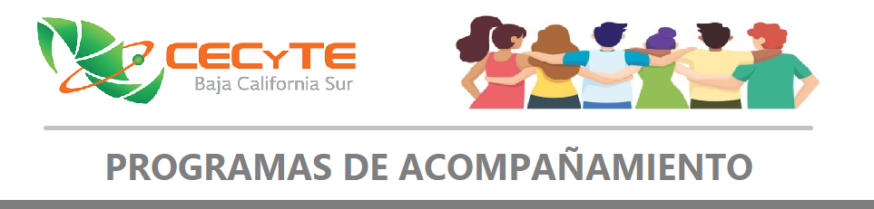

El Programa de Orientación Educativa del CECyTE de B.C.S., enfoca sus esfuerzos en la prevención y atención de los factores de riesgo de los estudiantes, tales como dificultades psicológicas, el ausentismo y la reprobación; en fortalecer la toma de decisiones responsables y las Habilidades Socioemocionales en los estudiantes. De igual manera, brinda apoyo a través de la orientación vocacional y profesiográfica.
El Programa de Tutoría Académicas del CECyTE De B.C.S., ofrece al estudiante un seguimiento académico desde que ingresa hasta que concluye sus estudios, mediante la designación de una figura responsable de un grupo de estudiantes llamado “Tutor”, “Monitor” o “Asesor” (generalmente un docente), cuyo acompañamiento se enfoca en atender dificultades en las esferas académica, socioemocional y vocacional de los estudiantes.
El Programa CONSTRUYE T, promover el aprendizaje de las habilidades socioemocionales de los estudiantes, los docentes y de los directivos; así mismo, encausa sus esfuerzos en impulsar la mejora del ambiente escolar.
En total engloba seis habilidades organizadas en tres dimensiones:
Conoce T, incluye “Autoconocimiento” y “Autorregulación”;
Relaciona T, incluye “Conciencia social” y “Colaboración”;
Elige T, “Toma responsable de decisiones” y “Perseverancia”.
Más información ingresando al sitio: http://www.construye-t.org.mx/
El Programa Yo No Abandono, que forma parte del “Movimiento Contra El Abandono Escolar”, el cual promueve labores de prevención de dicho fenómeno social, a través de labores de monitoreo de la reprobación y ausentismo (factores de riesgo), del seguimiento estadístico de los niveles y las causas y estrategias implementadas.
Así mismo, requiere de la participación activa del director y subdirector del plantel en la realización de intervenciones específicas con estudiantes y padres de familia, mediante las líneas de acción descritas en los documentos de la “Caja de herramientas” del programa.
Esta línea de acción del Nuevo Currículum de la Educación Media Superior, promueve la mejora de las estrategias didácticas implementadas en los centros educativos para la atención de estudiantes en condiciones de vulnerabilidad, tal como lo señalan los principios de la educación inclusiva.
Dentro de este rubro, se considera la capacitación para docentes, la mejore de la accesibilidad en espacios escolares, así como labores de difusión y promoción de la integración educativa.